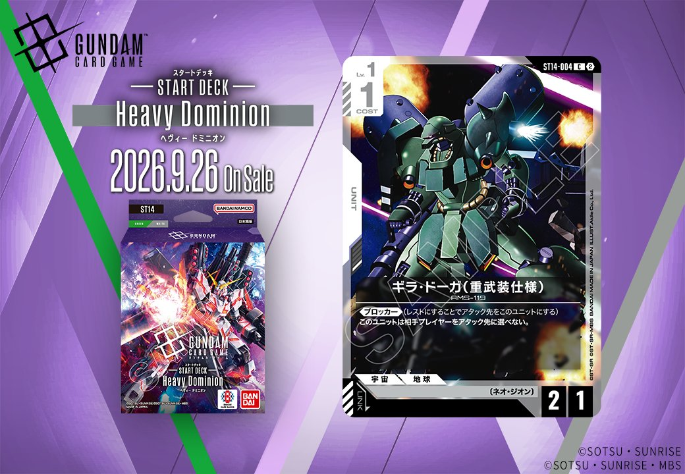

今回は「Generation Pulse」より、白のUNIT「ギラ・ドーガ(重武装仕様)」(ST14-004)を紹介します。発売日は2026-09-26です。

ギラ・ドーガ(重武装仕様) (ST14-004)
| 色 | 白 | タイプ | UNIT |
| Lv | 1 | コスト | 1 |
| AP | 2 | HP | 1 |
| 特徴 | 〔ネオ・ジオン〕 | ||
効果: 《ブロッカー》(レストにすることでアタック先をこのユニットにする)このユニットは相手プレイヤーをアタック先に選べない。
COST1でAP2/HP1、《ブロッカー》を持つ〔ネオ・ジオン〕ユニットです。相手プレイヤーをアタック先に選べない制約はあるものの、低コストで身代わりを立てられる点が明快です。 同じ《ブロッカー》持ちのガンダム・ルブリス(GD01-086)やリック・ディアス(GD02-079)と並べれば、複数の身代わりで盤面を守る運用が可能です。2026-09-26発売のST14収録で、リンクは設定されていません。


関連カード
-
 溢れる慈愛(GD01-118)白系デッキ内採用率39.4% (1671デッキ)
溢れる慈愛(GD01-118)白系デッキ内採用率39.4% (1671デッキ) -
 ガンダム・ルブリス(GD01-086)白系デッキ内採用率34.8% (1475デッキ)
ガンダム・ルブリス(GD01-086)白系デッキ内採用率34.8% (1475デッキ) -
 エールストライクガンダム(ST04-001)白系デッキ内採用率32.8% (1389デッキ)
エールストライクガンダム(ST04-001)白系デッキ内採用率32.8% (1389デッキ) -
 キラ・ヤマト(ST04-010)白系デッキ内採用率32.5% (1376デッキ)
キラ・ヤマト(ST04-010)白系デッキ内採用率32.5% (1376デッキ) -
 リック・ディアス(GD02-079)白系デッキ内採用率27.9% (1184デッキ)
リック・ディアス(GD02-079)白系デッキ内採用率27.9% (1184デッキ)